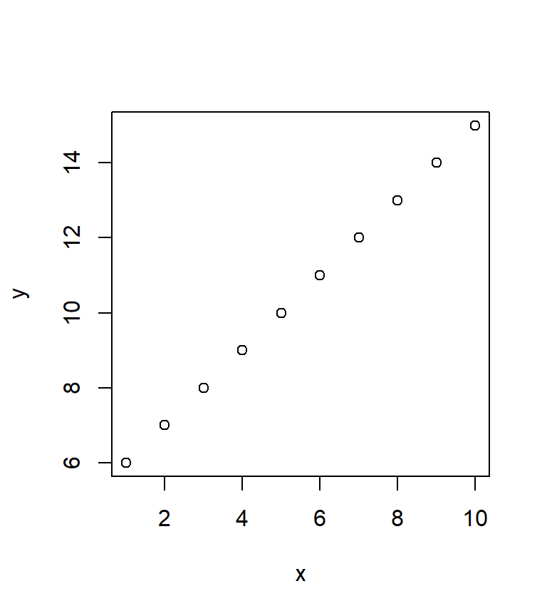

1.Rmarkdown是什么？
R Markdown是由91大神R大神谢益辉写的R包，R markdown 通过R来书写可重复动态报告的一种格式。利用它在幻灯片、pdf、html文档、Word文件中嵌入R代码和结果。其官方网站为：https://rmarkdown.rstudio.com/
2.如何使用Rmarkdown？
使用Rmarkdown，需要安装rmarkdown包，代码如下：
#install.packages("rmarkdown")R Markdown 的工作流程：

3. markdown的基本语法
3.1代码块设置
echo=FALSE最终的文档中不会显示代码，只会显示代码运行的结果和图像
results=“hide”隐藏结果，显示图像
include=FALSE隐藏代码和运行的输出（写报告时可使用include=FALSE来隐藏所有的代码，从而突出图像。）
fig.show=“hide” 隐藏图像
对于图像，可以通过fig.width和fig.height来设置宽和高，例如:
cat(c("```{r scatterplot, fig.width=4, fig.height=4.5}","```"),sep='\n')## ```{r scatterplot, fig.width=4, fig.height=4.5}
## ```x<-1:10
y<-6:15
plot(x,y)
- 如果想要避免每次使用代码块都重复敲代码来设置代码块，可按如下设置初始代码块：
#knitr::opts_chunk$set(fig.width=12, fig.height=8, fig.path='Figs/',
#echo=FALSE, warning=FALSE, message=FALSE)warning=FALSE 和message=FALSE最终文档中不会显示R软件任何的提示信息， fig.path=’Figs/’把图片保存在Figs子文件夹中（默认情况下图片不会被保存，注意Figs后面的斜线“/”不可少，否则图片会以Figs为文件名开头被保存在主目录中）。 如果在某个特定代码块中需要不一样的设置，可以单独设置该代码块。
行内代码(In-line code)：例如，这是ｉｒｉｓ数据集的第一行第一列 5.1.
必须写在一行内，不含空格和句点，可以使用-和_
3.2文字格式
一些基本的文本格式命令如下所示：
R markdown写论文的格式包
今天隆重介绍这个解救polisci,econ, sociology的明星package：stargazer。这个包有多强大呢：能直接输出符合期刊标准的回归分析表，这东西有多烦想必写过定量文章的都有体会。名字取得也很有意思：stargazer，LOL，星星收集者。炉石里面有张7费777的生物叫staraligner，台词是：stars are aligned。这里借这个包的名字祝各位研究者：stars are collected。想哪里显著就哪里显著，想哪里不显著哪里就不显著。
Install_And_Load <- function(Required_Packages){
Remaining_Packages <- Required_Packages[!(Required_Packages %in% installed.packages()[,"Package"])];
if(length(Remaining_Packages)) {
install.packages(Remaining_Packages);
}
for(package_name in Required_Packages){
library(package_name,character.only=TRUE,quietly=TRUE);
}
}
Required_Packages=c("MASS", "stargazer","ggplot2")#如需要用到以上几个包
Install_And_Load(Required_Packages)
library(MASS)
library(stargazer)
library(ggplot2)
mydata <- Boston
attach(mydata)
m1 <- lm(medv ~ crim)
m2 <- lm(medv ~ crim + zn)
stargazer(m1, m2, type = "html", header = FALSE)| Dependent variable: | ||
| medv | ||
| (1) | (2) | |
| crim | -0.415*** | -0.352*** |
| (0.044) | (0.043) | |
| zn | 0.116*** | |
| (0.016) | ||
| Constant | 24.033*** | 22.486*** |
| (0.409) | (0.442) | |
| Observations | 506 | 506 |
| R2 | 0.151 | 0.234 |
| Adjusted R2 | 0.149 | 0.231 |
| Residual Std. Error | 8.484 (df = 504) | 8.065 (df = 503) |
| F Statistic | 89.486*** (df = 1; 504) | 76.824*** (df = 2; 503) |
| Note: | p<0.1; p<0.05; p<0.01 | |